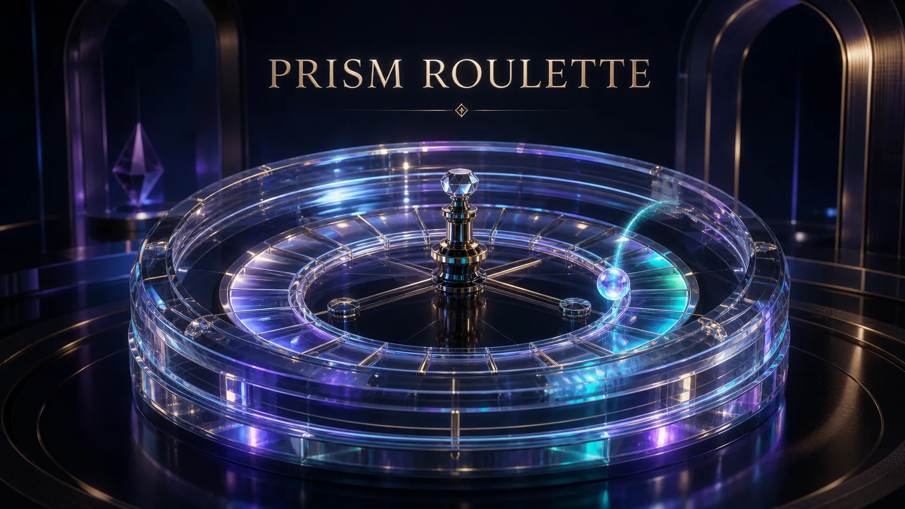
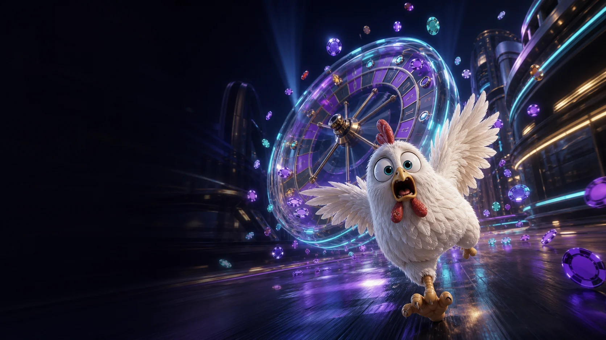
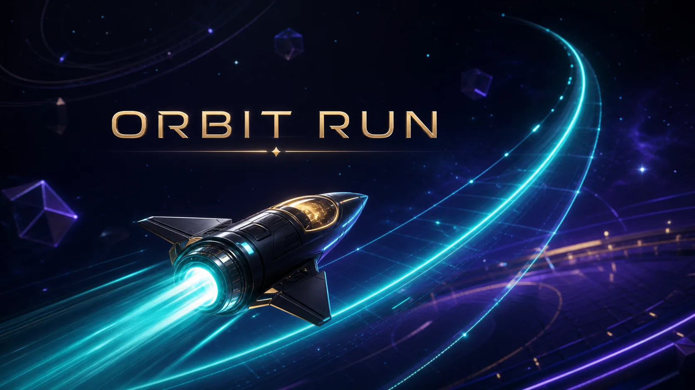
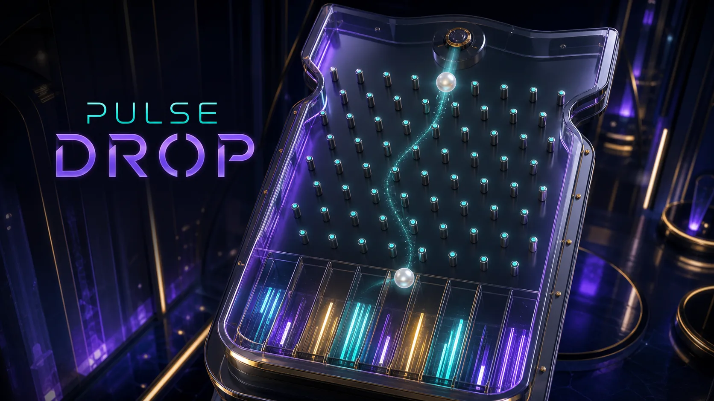
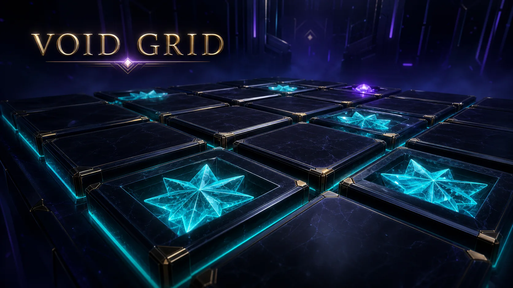
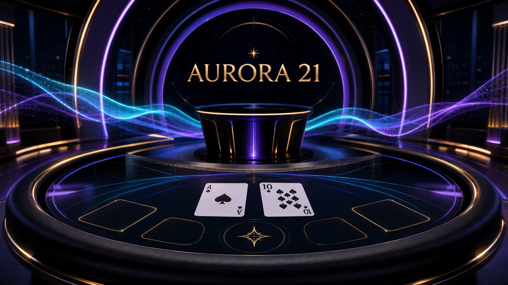
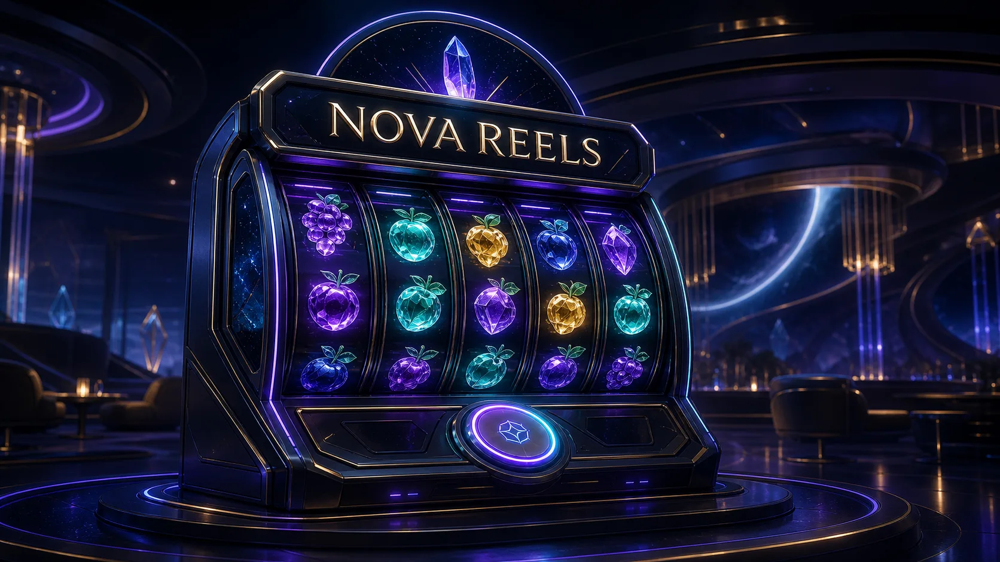

Prism Roulette
Прозрачный барабан из оптического стекла. Живая раздача, чистая геометрия, ни одного лишнего пикселя.


ASTRA · Beyond the expected
Кинематографичный игровой мир: шесть демо-режимов, спокойный интерфейс и пространство, в котором ничто не давит на решение.
Каталог · шесть демо
Прозрачный барабан из оптического стекла. Живая раздача, чистая геометрия, ни одного лишнего пикселя.

Кривая набирает высоту в реальном времени. Мгновенный формат для тех, кто любит читать momentum.


Фишка падает сквозь световую решётку. Физика, свет и спокойный ритм.

Сетка скрытых ячеек в темноте. Пространственная логика вместо шума.

Классический счёт до 21 в студии северного сияния. Живой стол, мягкий свет, спокойный ведущий.
Барабаны собраны из звёздной пыли. Флагманский видеослот мира Astra — тот самый экран, ради которого всё и затевалось.

В этой категории пока нет демо. Выберите другую.
Дизайн-принципы
Крупные цели и лёгкая навигация. Всё, что важно, помещается в большой палец.
Анимация поддерживает сцену, а не борется за внимание. Уважает reduced-motion.
Без давления и ложной срочности. Никаких таймеров, фальшивых выигрышей и тёмных паттернов.
О проекте
ASTRA — визуальный демонстрационный концепт игрового lobby 2026 года. Здесь нет ставок, депозитов, баланса и реальных игр — только атмосфера, типографика и работа со светом.
Все названия вымышлены, все ролики оригинальны. Это витрина подхода, а не сервис.